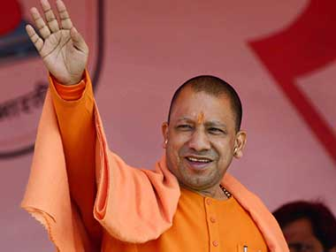

News About Politics
Lucknow: Samajwadi Party (SP) president Akhilesh Yadav alleged that the BJP-led government in Uttar Pradesh was trying to defame and harass its political opponents in the name of inquiries, adding that it would reap the fruits of what it was sowing in the future more..

Amit Shah has little reason to be pleased with Srinivas Prasad. The former Karnataka revenue minister crossed over to the BJP in 2016 after he felt humiliated at the manner in which he was dropped from Siddaramaiah's cabinet more...

New Delhi: The ruling Aam Aadmi Party (AAP), along with the BJP and the Congress, met members of the Supreme Court-appointed monitoring committee on Wednesday and sought immediate relief for traders in Delhi from the sealing drive, but the panel did not give any assurance in this regard more...

At a paan (betel) shop at Hazratgamj in Lucknow, two persons were leisurely having their early morning paan and discussing politics. “Looks like the BJP is surging ahead," one of them said and then started giving his perspective. While they were still talking, an auto stopped and the driver rushed out to buy some gutka more...

Congress claimed a sweeping victory in the Punjab civic polls on Sunday, clinching a majority of seats in the Amritsar, Jalandhar and Patiala municipal corporations.
The margin of victory prompted Punjab chief minister Captain Amarinder Singh to say that this win was a "clear vindication of the government's policies" and a "defeat for the Opposition's propaganda more...

The Bharatiya Janata Party (BJP) suffered defeats in Gorakhpur — a seat vacated by Uttar Pradesh chief minister Yogi Adityanath — and Phulpur, a constituency won by Deputy Chief Minister Keshav Prasad Maurya in 2014, to the alliance of Akhilesh Yadav led-Samajwadi Party and Mayawati-helmed Bahujan Samaj Party (BSP) more...
Bengaluru: Welcoming the Election Commission's schedule for the Assembly polls in Karnataka, political parties on Tuesday said they are "election ready", with all three players, Congress, BJP and JDS, claiming that they would come to power. more...